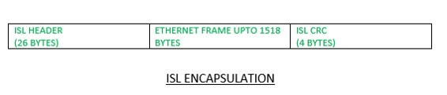
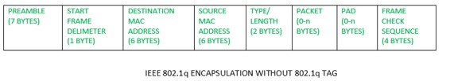

VLANs are used to divide broadcast domain at layer 2. By default, all the switch ports are in VLAN 1. Configuration of VLANs other than VLAN 1 then to carry traffic of these VLANs, user has to make a switch port trunk which is connected to another switch. If the frame is forwarded out to an access link then it is considered that the frame belongs to the VLAN which is configured on that switch port. But if the frame is forwarded out to a trunk link then how did the other device know that the traffic belongs to which VLAN? There comes the concept of VLAN identification methods.
VLAN Identification methods –
If the frame is forwarded out to a trunk link then a header or tag is added to the frame header which specifies the VLAN to which the frame belongs. The frame is encapsulated at the sender’s switch and removed at the receiver’s switch and then forwarded out to the ports which belongs to that VLAN (according to the processing of switch).
There are 2 VLAN identification methods:
- Inter-Switch Link (ISL) –
This is a VLAN identification method in which VLAN information is explicitly tagged onto Ethernet frame. ISL is proprietary to CISCO switches. ISL functions at layer 2 by encapsulating a data frame with a new header and by performing a new cyclic redundancy check (CRC).In ISL, the original frame is encapsulated and an additional header is added before the frame is carried over a trunk link. At the receiving end, the header is removed and the frame is forwarded to the assigned VLAN.
ISL supports upto 1000 vlans. The concept of native VLAN is not important for ISL as all frames including the ones for native VLAN are tagged.

The ISL frame encapsulation is of 30 bytes, 26 byte header and a 4 byte FCS (frame check sequence) are inserted. Hence a total of 30 Bytes of overhead. Therefore, it is less preferred. Even Cisco advice to use 802.1Q.
Configuration (ISL):
Switch(config)#interface Fa0/1 Switch(config-if)#switchport trunk encapsulation isl Switch(config-if)#switchport mode trunk
- 802.1Q –
It is IEEE standard method of frame tagging. If user wants to trunk between a Cisco switch link and a different brand switch link, then have to use 802.1Q encapsulation for the trunk to work.In 802.1Q, the trunking device inserts a 4-byte tag into the original frame and recomputes the frame check sequence (FCS) before the device sends the frame over the trunk link. At the receiving end, the tag is removed and the frame is forwarded to the assigned VLAN.


Out of 4 bytes, there is a 12 bit VLAN that matters the most. This field tells about the VLAN number to which the frame belongs. The VLAN can vary from 1 to 4094, i.e supported for 4094 VLANs as VLAN 0 4095 are reserved VLANs. 802.1Q supports the concept of native Vlan, i.e the traffic will go untagged for this Vlan.
Note – Inter-Switch Link (ISL) and 802.1Q are used to provide inter-switch VLAN communication. The ISL or 802.1Q frame tagging is removed if a frame is forwarded out to an access-link.
Configuration (802.1Q) :
Switch(config)#interface Fa 0/1 Switch(config-if)#switchport trunk encapsulation 802.1q Switch(config-if)#switchport mode trunk